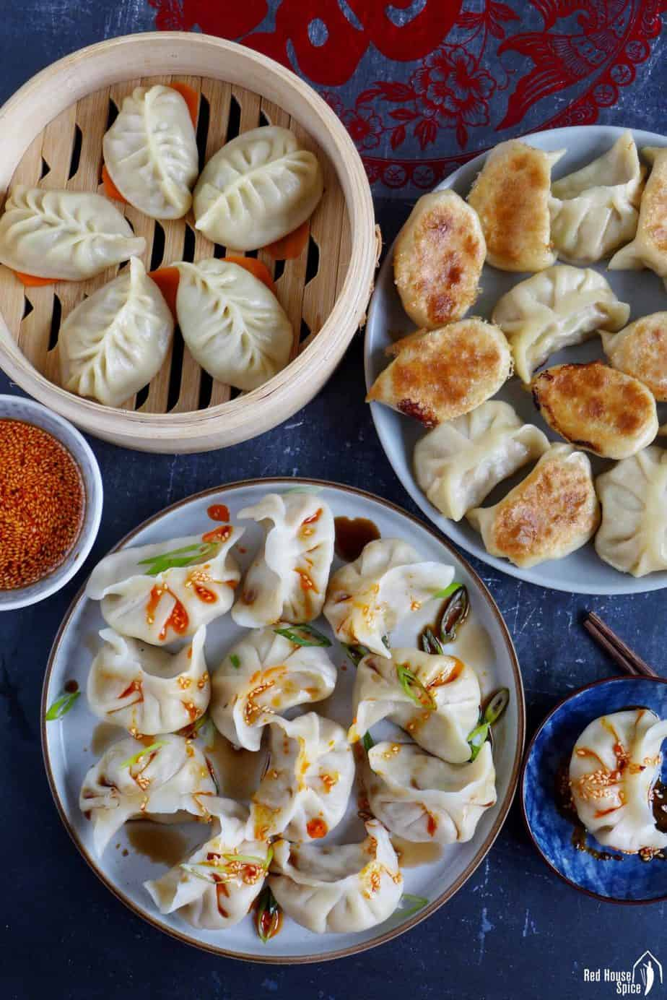

Recipes
Tanghulu
Origin: China
Source: Family recipe
Category: Snack

Tanghulu or tang hulu, also called bingtang hulu, is a traditional Chinese snack consisting of several rock sugar-coated fruits, usually Chinese hawthorn, on a bamboo skewer.
Recipe Ingredients
- Sugar
- Skewered fruits (make sure to dry the fruits)
- Water
Recipe Steps
- Pour 2 cups of sugar in a pot
- Pour 1 cup of water into the same pot
- Boil on high for 14 minutes, or until it turns golden (DO NOT STIR!)
- Prepare ice bath
- When sugar syrup is done, dip fruits in the sugar syrup then into the ice bath
Photo Gallery


Chicken Curry
Origin: Japan
Source: Family recipe
Category: Main Dish

Unlike Indian or Thai curry, Japanese curry is more savory than spicy. It's an exemplary comfort food and one of the most-loved home-cooked dishes in Japan.
Recipe Ingredients
- skinless, boneless chicken breast
- 1 tablespoon olive oil
- Water
- 1 package curry sauce mix
- 1 can peas
- 5 new potatoes, halved
- 1 package sliced cremini mushrooms
- 2 medium carrots, chopped
- 1 medium onion, chopped
- 2 cups jasmine rice
Recipe Steps
- Place chicken in a large, deep skillet. Drizzle with olive oil and season with salt and pepper on both sides. Add 1/3 cup water to the pan, cover, and cook over medium heat until no longer pink in the center and the juices run clear, about 20 minutes.
- While chicken is cooking, pour 2 cups water into a microwave-safe bowl. Break curry sauce mix into pieces and add to water. Heat in the microwave on high for 3 1/2 minutes; remove and stir until sauce mix has completely dissolved.
- Remove chicken from the skillet. Cut into cubes, return to the skillet, and pour curry sauce over top. Stir in peas, potatoes, mushrooms, carrots, and onion. Bring to a boil, then lower heat and simmer until vegetables are tender, about 30 minutes.
- Meanwhile, bring remaining water and rice to a boil in a saucepan. Reduce heat to medium-low, cover, and simmer until rice is tender and water has been absorbed, 20 to 25 minutes.
- Scoop rice into bowls and serve curry on top.
Photo Gallery


Chinese Jiaozi
Origin: China
Source: flour, pork and cabbage
Category: Main Dish
Chinese dumplings (Jiaozi, 饺子) are stuffed parcels made of unleavened dough and savory fillings consisting of minced ingredients like meat, egg, tofu, or vegetables. They can be boiled, pan-fried or steamed.
Recipe Ingredients
- Flour
- Water
- Pork
- Cabbage
Recipe Steps
- Dough
- Filling
- Folding
- Cooking
- Dipping sauces
Photo Gallery
